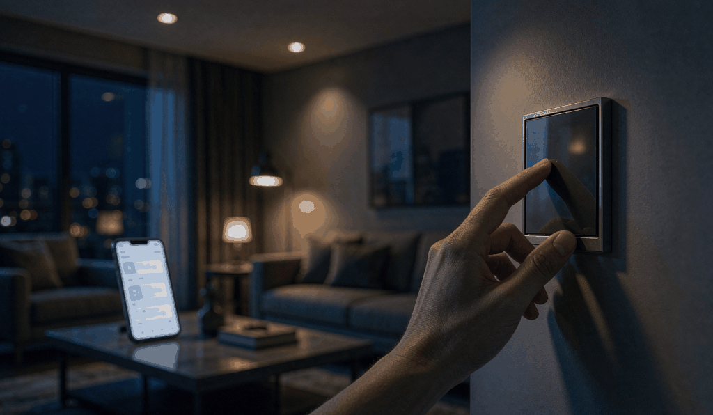
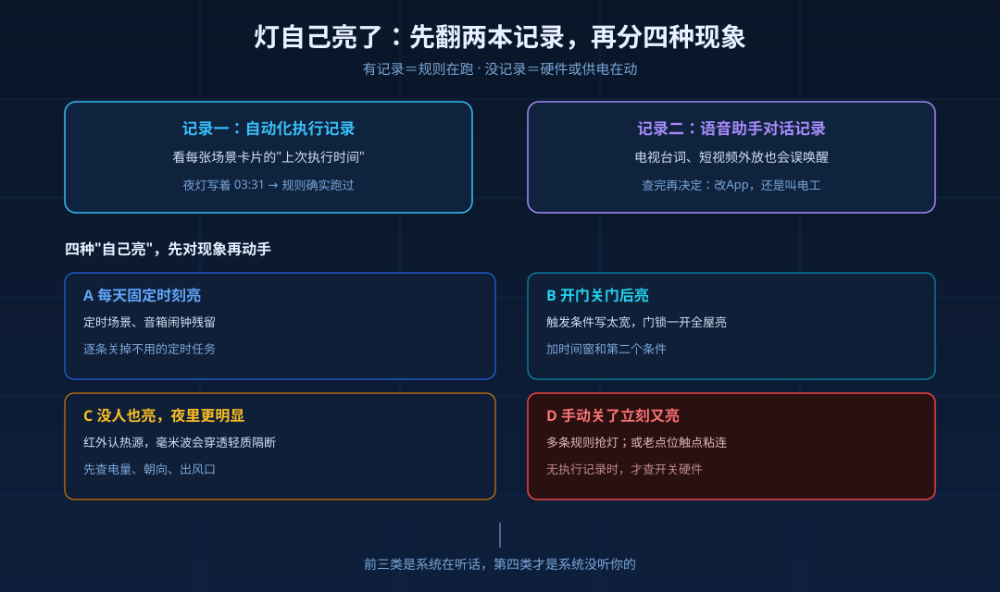
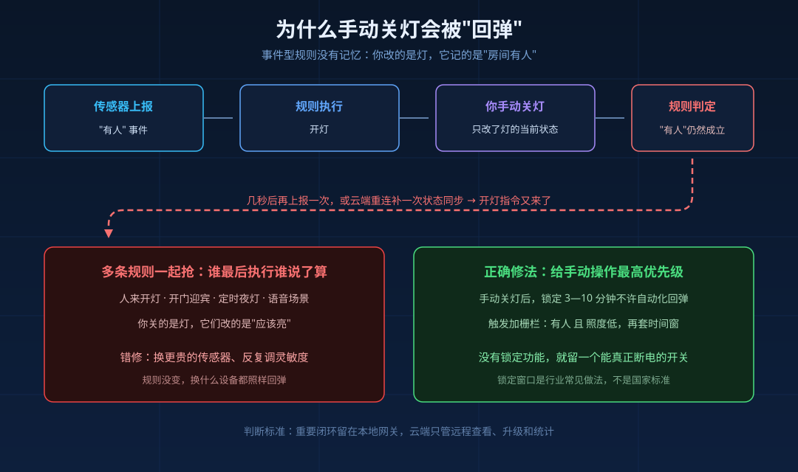
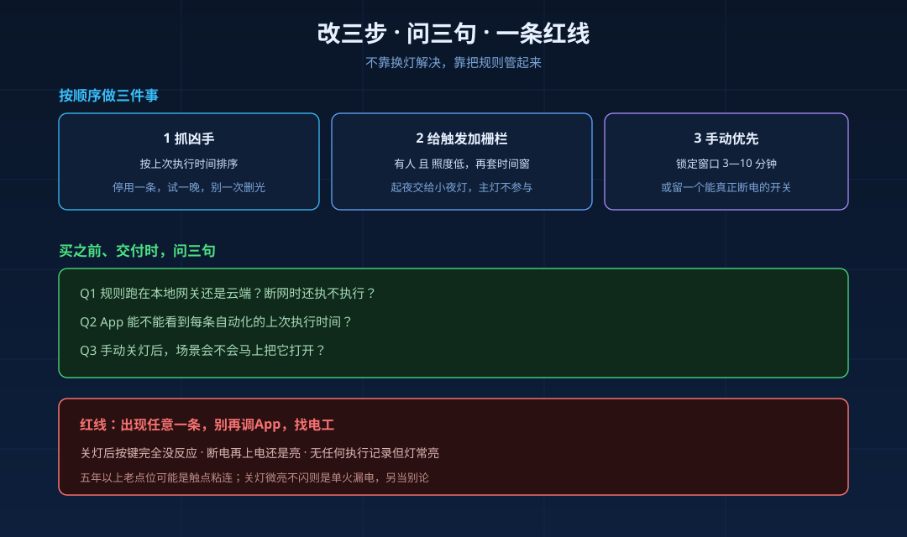

晚上十点半，关了客厅灯，躺下两分钟，灯又亮了。最近半年"半夜灯自己亮""智能马桶自己冲水"的帖子在装修社区集中冒出来，评论区一半说自己家也这样，一半劝人查线路。
我做灯具十几年，先给结论：**绝大多数不是灯坏了，是"设置在跑"，而且跑的往往不止一条规则。**灯只是执行者，真正做决定的是那几条看不见的自动化。
先翻两本记录，再决定改App还是叫电工
碰到灯自己亮，第一件事不是拔网关，是查记录：
- **自动化执行记录。**主流App的场景页会标"上次执行时间"。卧室夜灯那条如果写着凌晨3:31，说明规则确实跑过一次，灯没坏。
- **语音助手的对话记录。**看那一声是不是误唤醒——电视台词、短视频外放、设备提示音都可能被听成指令。
**有记录＝规则问题；没记录但能复现＝硬件或供电问题。**这一步能把后面的折腾砍掉一半。
四种"自己亮"，长得完全不一样
| 现象 | 最可能的原因 | 先查哪里 |
|---|---|---|
| 每天固定时刻亮 | 定时场景、音箱闹钟残留 | 自动化列表逐条看，不用的关掉 |
| 开门、关门后全屋亮 | 触发条件写太宽 | 给"门锁开"加时间窗和第二个条件 |
| 没人也亮，夜里、开空调、刮风时更明显 | 传感器误判 | 朝向、距离、电量、出风口 |
| 手动关了立刻又亮，按键像没反应 | 多条规则抢同一盏灯，或老点位触点粘连 | 执行记录；无记录再查开关硬件 |
前三类，是系统老老实实按你说的话在做；第四类，才是系统没听你的。
红外人体传感器认的不是人，是移动的热源：空调出风口、窗帘、猫狗和扫地机都算。毫米波存在传感器更灵敏，部分24GHz雷达能透过轻质隔断，把墙外的人算进屋里；电量低时还会乱报。误触发先查电量和安装位置，别急着换灯。

核心机理：事件型规则没有记忆
"有人就开灯"是一条事件规则：传感器上报一次"有人"，灯就开。你顺手关灯，只改了灯的当前状态，没有改"这个房间有人"这个判断。几秒后传感器再上报一次，或者云端重连补一次状态同步，开灯指令又下来了——看起来就是手动关不掉。
再叠加几条规则就更乱：人来开灯、开门迎宾、定时夜灯、语音场景，谁最后执行谁说了算。你关的是灯，它们改的是"应该亮"。
所以真正要改的不是灯，是优先级：人手动关掉，就应该压过自动化一段时间。

三件事，按顺序做
- **抓凶手。**把自动化按"上次执行时间"排一遍，找到关灯后、凌晨跑过的那几条，先停用一条试一晚。别一次全删，出问题就不知道是哪条在作怪。
- **给触发加栅栏。**把"有人就开灯"改成"有人，且照度低于阈值"，再套一个19:00—23:00的时间窗。起夜交给感应小夜灯，不让主灯参与。走廊可以让红外传感器负责快速亮、存在传感器负责判断没人再关，两个配合比堆一个贵的型号有用。
- **给手动留最高优先级。**有锁定窗口功能的设3—10分钟（这是行业里常见的做法，不是国家标准），手动关灯后这段时间内不许自动化回弹。没有这个功能的，至少保证有一个能真正断电的物理开关，或者单独停掉夜间场景。
买之前、交付时，问三句
- 这些规则跑在本地网关还是云端？断网时还执不执行？（决定它会不会在重连后补一刀）
- App里能不能看到每条自动化的上次执行时间？（看不到＝出问题只能猜）
- 手动关灯后，场景会不会马上把它打开？有没有手动优先？
三句都问不出来，装再多灯，也只是多几个会自己亮的设备。判断一套智能照明好不好，不看App里有多少模式，看它会不会在你不想亮的时候闭嘴。

什么情况别再调App了
出现任意一条，就别在软件里打转：关灯后按键完全没反应；断电再上电还是亮；没有任何执行记录但灯一直亮。用了五年以上的老点位，可能是墙壁开关的继电器触点粘连——触点焊住了，改什么规则都没用，找电工换开关。
另一种"关了还微微亮、但不闪"，是单火取电的漏电流，和本篇不是一回事。
三个人人都问过的问题
换更贵的传感器有用吗？ 执行记录里根本没有触发记录，换有用；记录显示规则在跑，换什么传感器都白搭。
把灯删了重新添加行不行？ 解决不了规则冲突。规则是按设备记录的，删了重加，旧规则可能仍指向旧记录，直接删掉那条自动化、重新选设备更省事。
云端自动化是不是都不能用？ 不是。远程查看、固件升级、能耗统计放云端合适；走廊、起夜这类要立刻执行的闭环，留在本地网关更稳。
关于Nexlamp：耐利普科技专注涂鸦Zigbee智能照明，NEX1-9系列筒灯射灯全系列Ra90/98高显色、深杯防眩设计，支持开关/Zigbee/米家/DALI/0-10V/可控硅6种控制方式。更多选灯知识见 www.nexlamp.com